Study J04 as a complete chapter: models and assumptions → derivations → solved controls → refinements → one comprehensive calculation. The cavity/source history is supplied here; laser absorption and PFC thermodynamics enter after J04. Ask about any step that is unclear.
将 J04 作为完整章节学习：模型与假设 → 推导 → 已解对照 → 改进 → 一道综合计算。本阶段给定腔体／源历程；激光吸收与 PFC 热力学在 J04 之后引入。任何不清楚的步骤均可继续提问。
Goal: derive receiver force and early impact pressure, keep their durations consistent with a finite jet, and define a maximum that can be checked. This closes the generic mechanics chain before introducing material-specific sources.
目标：推导接收体受力与早期冲击压力，使其持续时间与有限射流相容，并定义可检验的最高值。在引入特定材料源之前，完成通用力学链。
1 · A arriving jet has mass and momentum, not just a fast tip
1 · 到达射流有质量与动量，不只有快速尖端
Take the arrival shape and velocity field from J03. For the first impact control use a uniform cylindrical liquid jet of known radius, finite length and speed, with no continuing source behind it. Define the receiver normal along the incident jet. Integrating liquid mass, axial momentum and kinetic energy gives three distinct inputs. In a nonuniform jet, a fastest tip cannot replace the mass-weighted velocity field in those integrals.
取 J03 给出的到达形状与速度场。首个冲击对照使用半径、有限长度及速度已知的均匀圆柱液体射流，后方没有持续供给。将接收体法向定为沿入射射流。对液体质量、轴向动量及动能积分，会得到三个不同输入。非均匀射流中，最快尖端不能替代积分所需的按质量加权速度场。
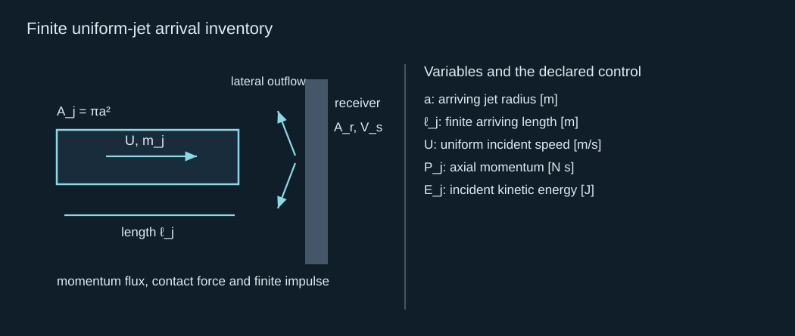
Finite uniform-jet arrival inventory
有限均匀射流的到达存量
For a fixed receiver and a quasi-steady incoming stream redirected laterally, the outgoing axial velocity is approximately zero. The axial force then equals incoming axial momentum flux. It is twice dynamic pressure times jet area, because dynamic pressure is an energy-per-volume scale, not this complete momentum flux. Averaging force over a larger receiver footprint reduces mean traction. A localized peak pressure still requires the contact solution.
固定接收体将准稳态来流转向侧面时，流出轴向速度近似为零，因此轴向受力等于流入轴向动量通量。它是动压乘射流面积的两倍，因为动压是单位体积能量尺度，并非该完整动量通量。把受力平均到更大接收面积会降低平均牵引；局部峰值压力仍需接触解。
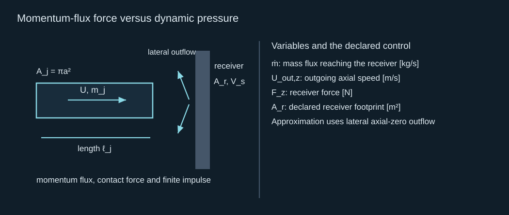
Momentum-flux force versus dynamic pressure
动量通量受力与动压
The momentum balance changes when the receiver moves. In a control volume following a locally flat receiver, the incoming relative speed determines both the rate of interception and the momentum change under the lateral-redirection approximation. Receiver inertia and support stiffness then determine its motion. These equations explain why compliance can lower an early pressure yet change the loading duration and footprint. They do not equate the receiver’s modulus with its acoustic impedance.
接收体运动时，动量平衡会改变。跟随局部平面接收体的控制体中，在侧向转流近似下，入射相对速度同时决定截获速率与动量变化。接收体惯性及支撑刚度再决定运动。这些方程说明柔顺性可降低早期压力，同时改变加载持续时间与范围，但不能把接收体模量等同于声阻抗。
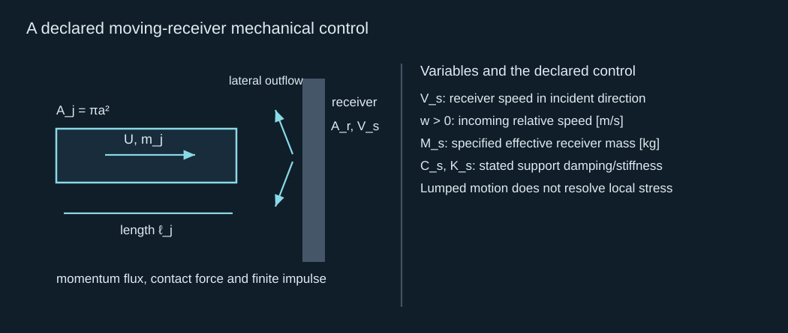
A declared moving-receiver mechanical control
声明的运动接收体力学对照
2 · Finite momentum constrains the duration of a load
2 · 有限动量约束载荷持续时间
If the whole isolated jet is intercepted and its axial momentum is removed, the integrated receiver force equals that removed momentum, provided other external forces and continuing source input are absent. A different outgoing axial momentum changes this equality; a reflected jet can deliver more than its original forward momentum. State the actual outgoing state and system boundary. For the uniform lateral-redirection reference, passage time and steady force reproduce the finite impulse exactly.
若整个孤立射流被截获且轴向动量被消除，在没有其他外力及持续源输入时，接收体受力的时间积分等于消除的动量。不同流出轴向动量会改变等式；反射射流可传递超过原前向动量的冲量。应声明实际流出状态与系统边界。均匀侧向转流参照中，通过时间及稳态受力恰好复现有限冲量。
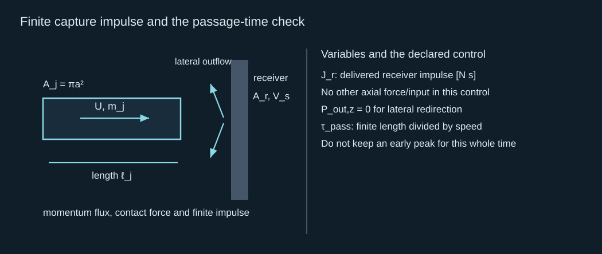
Finite capture impulse and the passage-time check
有限截获冲量与通过时间核验
The integral is a useful check on an assumed pressure history: multiply area-integrated traction by duration and compare with the momentum ledger. It cannot determine the peak from impulse alone. A short large peak and a longer small tail can have the same impulse. Conversely, inserting an early acoustic peak over the whole passage time can demand many times more momentum than the jet carries. The next section derives the peak scale and its short-time conditions.
该积分可核验假设压力历程：把面积积分牵引作时间积分，再与动量清单比较。但单凭冲量不能确定峰值。短暂大峰和较长小尾可以具有相同冲量；反之，把早期声学峰保持整个通过时间，可能要求远超射流携带的动量。下一节推导峰值尺度及其短时条件。
3 · Derive early impact pressure from acoustic characteristics
3 · 从声学特征线推导早期冲击压力
During the initial central contact, pressure communicates through a compressible liquid faster than the jet is redirected as a whole. Linearize one-dimensional momentum and mass conservation about a uniform liquid state and use the local sound speed. These equations describe the source-free arrest transient; they are not an externally imposed periodic acoustic drive. Combine them to obtain traveling characteristic invariants and a pressure–particle-velocity relation.
初始中央接触时，压力通过可压缩液体传播，比整个射流完成转向更快。围绕均匀液态线性化一维动量与质量守恒，并使用局部声速。这些方程描述无源制动瞬态，不是外加周期声学驱动。将两者组合可得传播特征不变量及压力与质点速度的关系。
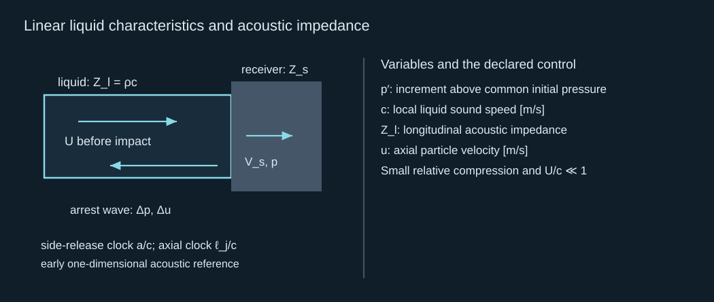
Linear liquid characteristics and acoustic impedance
线性液体特征线与声阻抗
An arrest wave that changes incoming liquid speed to receiver speed gives pressure equal to liquid impedance times the removed speed. For a passive semi-infinite receiver initially at rest, an outgoing longitudinal wave gives its interface speed as pressure divided by receiver impedance. Matching pressure and interface velocity solves the initial coupled problem. A rigid limit sets receiver speed to zero; a low-impedance receiver moves substantially and receives a smaller pressure.
把来液速度改变为接收体速度的制动波，给出压力等于液体阻抗乘消除的速度。对初始静止的被动半无限接收体，外传纵波使其界面速度等于压力除接收体阻抗。匹配压力与界面速度即可求解初始耦合问题。刚性极限令接收体速度为零；低阻抗接收体运动较大，压力较小。
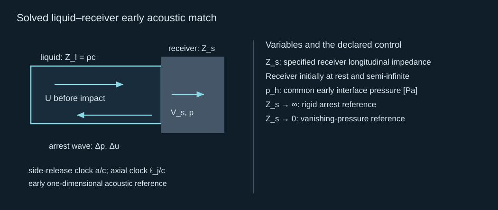
Solved liquid–receiver early acoustic match
已解液体与接收体早期声学匹配
This is an initial-value impact match, so it has no factor of two from an unspecified incident pressure wave. That factor belongs to a different problem, reflection of a pre-existing wave. The characteristic derivation makes the chosen initial state explicit. Pressure/velocity matching and longitudinal impedance can be checked against MIT’s acoustic-wave treatment. A layered or finite receiver requires its reflections and frequency-dependent response; the simple match is a declared early control.
这是冲击初值匹配，不含某个未声明入射压力波产生的二倍因子；那个因子属于预先存在波的反射这一不同问题。特征线推导明确选定的初始状态。压力／速度匹配及纵向阻抗可依据 MIT 声波论述核查。分层或有限接收体需要其反射及频率相关响应；简单匹配只是声明的早期对照。
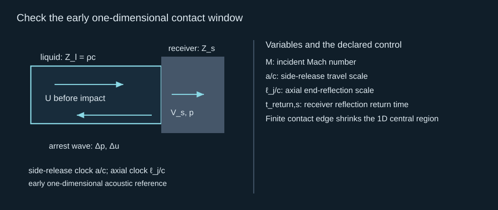
Check the early one-dimensional contact window
检查早期一维接触时窗
A real narrow jet has free sides. Release signals from the edge eventually reach the central contact, so the one-dimensional peak cannot be kept unchanged over the entire geometric transit. Close to the edge, release begins earlier; a central estimate is not automatically an area average. High Mach number, liquid equation-of-state changes, shock dissipation and contact geometry require a nonlinear compressible solution. Resolve the arrival state and receiver motion rather than simply labeling every pressure peak “water hammer.”
真实窄射流有自由侧面，边缘释放信号最终到达中央接触区，因此不能让一维峰值在整个几何通过时间保持不变。边缘附近释放更早；中央估值不会自动成为面积平均。高马赫数、液体状态方程变化、激波耗散及接触几何需要非线性可压缩解。应解析到达状态及接收体运动，不能把每个压力峰都直接称为“水锤”。
4 · Tighten the impact model with conservative compressible flow
4 · 用守恒可压缩流改进冲击模型
For a nonlinear impact, replace the linear arrest equations by bulk conservation of mass, momentum and total energy. Supply an equation of state, viscosity and heat conduction, with initial density, temperature/internal energy and the arrival velocity field. The mechanical stage has no optical source term: it receives the state already prepared upstream. Pressure work, viscous work and conductive flux must use the same total-energy equation so that an impact peak cannot gain energy from a missing term.
非线性冲击时，用体内质量、动量及总能量守恒替代线性制动方程。给出状态方程、黏性和热传导，以及初始密度、温度／内能和到达速度场。力学阶段没有光源项，而是接收上游已制备状态。压力做功、黏性做功及导热通量必须使用相同总能量方程，以避免冲击峰从缺失项中虚增能量。
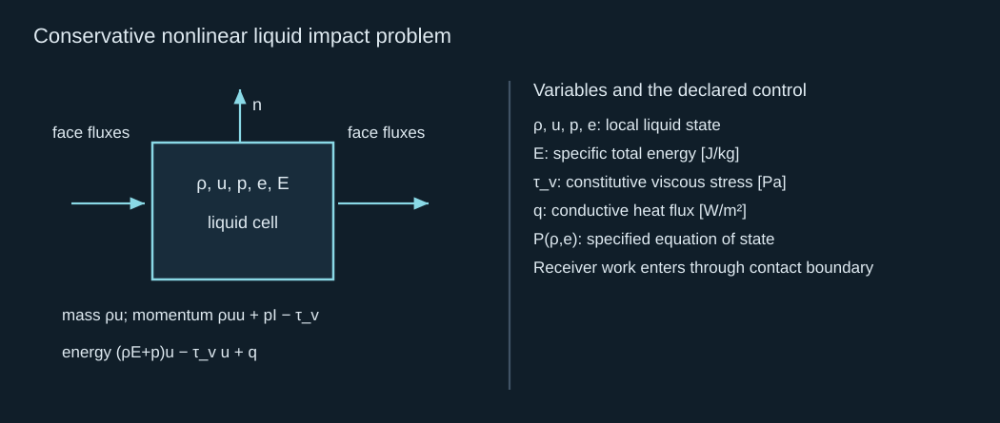
Conservative nonlinear liquid impact problem
守恒非线性液体冲击问题
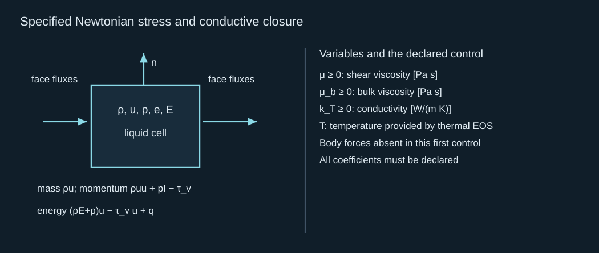
Specified Newtonian stress and conductive closure
规定的 Newton 应力与导热闭合
At an intact free surface, use the kinematic condition and capillary traction with a specified exterior gas pressure; at the receiver, enforce the chosen slip/contact condition and compatible normal motion. Traction drives the receiver’s declared solid or reduced mechanical law. Specify outer/outlet wave conditions and check reflection return times. These data, together with the constitutive laws, close a spatial impact initial-boundary-value problem. They are the natural continuation of the arrival state from J03, not a new arbitrary pressure prescription.
完整自由表面使用运动学条件与毛细牵引，并给定外部气压；接收体上执行所选滑移／接触条件及相容法向运动。牵引驱动声明的固体或降阶接收体力学规律。指定外界／出口波动条件并检查反射返回时间。这些数据与本构规律共同闭合空间冲击初边值问题，是 J03 到达状态的自然延续，不是新增任意压力规定。
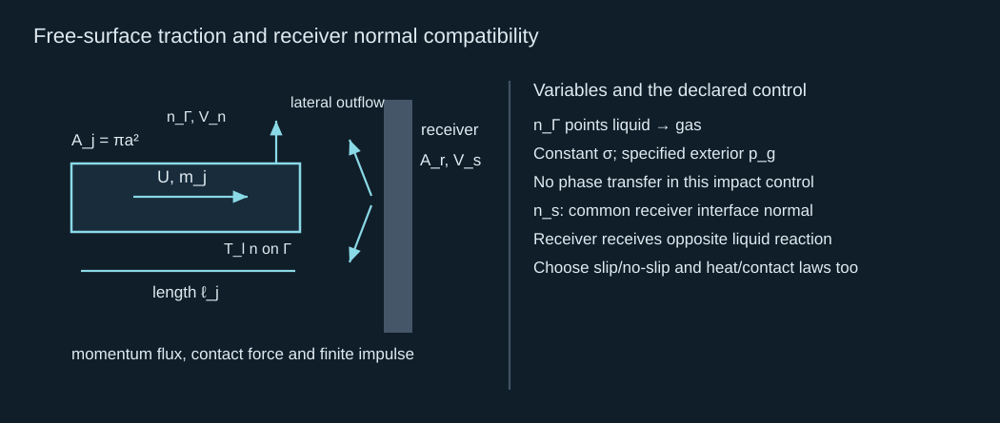
Free-surface traction and receiver normal compatibility
自由表面牵引与接收体法向相容
A simple compressible reference can use a stiffened-gas equation of state. Its parameters are declared constants, not automatically water or PFC data. Absolute pressure and the chosen internal-energy datum matter here. The reference sound speed constrains one parameter; a valid thermal closure must also relate internal energy to temperature. Use this law for a verification benchmark and replace it with an independently supported material equation when predicting high states.
简单可压缩参照可以使用刚化气体状态方程。参数为声明常数，不自动成为水或 PFC 数据。这里绝对压力及选定内能基准很重要。参照声速约束一个参数，有效热学闭合还要将内能与温度联系起来。该规律用于核验对照；预测高状态时，应替换为独立支持的材料方程。
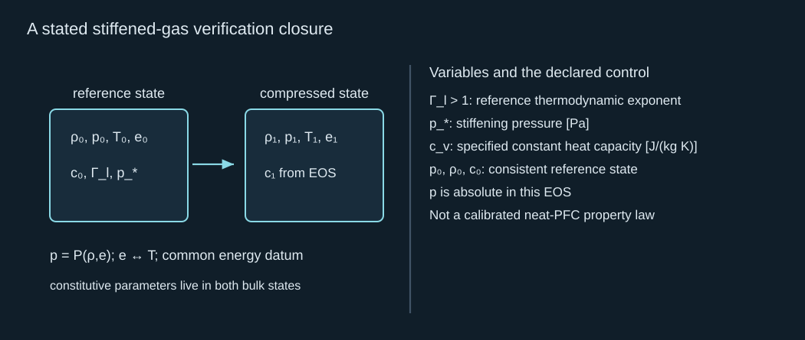
A stated stiffened-gas verification closure
声明的刚化气体核验闭合
An exactly soluble planar shock is a stronger benchmark than simply checking a peak value. Work in the initially moving liquid’s rest frame: the arrest wave travels into that liquid at speed D and gives particle-speed change w. Integrate the three conservation laws across the discontinuity. The mass and momentum jumps give compression and pressure rise; the energy jump closes the downstream state. Combining them with the stiffened-gas law gives an explicit nonlinear arrest pressure. The small-speed limit recovers the acoustic result.
可精确求解的平面激波是比单独检查峰值更强的对照。在初始运动液体的静止参考系中，制动波以 D 进入液体，并产生速度变化 w。跨越间断积分三个守恒律。质量与动量跃变给出压缩及压力增量，能量跃变闭合下游状态。与刚化气体规律结合，会得到明确非线性制动压力，小速度极限还原声学结果。
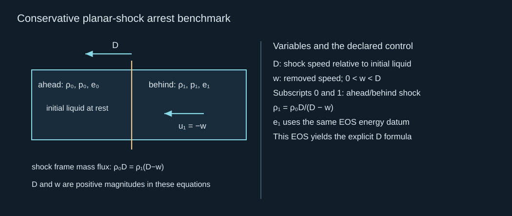
Conservative planar-shock arrest benchmark
守恒平面激波制动对照
This calculation keeps the mechanism positive and testable: it predicts a nonlinear correction and supplies mass, momentum and energy residuals to verify. It still describes a planar shock before edge release, not the entire free-jet impact or film separation. For a moving receiver solve its response together with the liquid shock, rather than keeping the linear receiver speed when the liquid law is strongly nonlinear. This is the precise point at which a full spatial compressible calculation becomes necessary.
该计算提供正面、可检验的机制结果：预测非线性修正，并提供可核验的质量、动量和能量残差。但它仍描述边缘释放前的平面激波，不代表完整自由射流冲击或薄膜分离。液体规律强非线性时，应同时求解接收体响应与液体激波，不能继续固定线性接收体速度。这明确指出何时需要完整空间可压缩计算。
The conservative jump conditions and the planar piston reference can be checked in Ramsey and Baty (2019). Our equations state the energy datum and initial pressure explicitly; compare equivalent closures before borrowing material constants. The nonlinear benchmark is independently checked by all three shock conservation residuals.
守恒跃变条件及平面活塞参照可在 Ramsey 与 Baty（2019） 中核查。这里明确能量基准及初始压力；移用物性常数前应比较等价闭合。非线性对照由三个激波守恒残差独立核验。
5 · Define the pressure observation before reporting a maximum
5 · 报告最高值之前先定义压力观察
A pressure maximum depends on where and how it is observed. Fix the receiver footprint and a causal temporal kernel. First average local pressure over that footprint, then convolve with the instrument response. A nonnegative normalized averaging kernel provides a clear finite-window observable. Real sensors can have ringing or a signed impulse response; those must use their measured kernel rather than this averaging model. Keep the observer unchanged when comparing mesh sizes or sources.
压力最高值取决于观察位置及方式。固定接收面积和因果时间核：先在面积上平均局部压力，再与仪器响应卷积。非负归一化平均核提供明确有限时窗观察量。真实传感器可振铃或具有带符号冲激响应，届时应使用实测核，而不是本平均模型。比较网格或源时，观察量要保持不变。
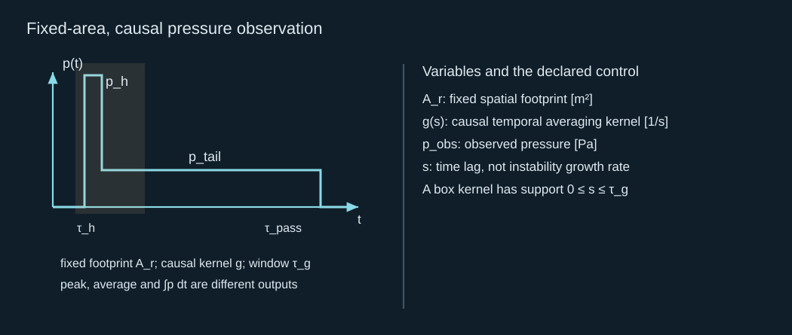
Fixed-area, causal pressure observation
固定面积的因果压力观察
For a rectangular early peak followed by a smaller tail, an observer window longer than the peak reports a much lower value than the mathematical local maximum. The integrated force can still match the same finite jet momentum. The worked problem below constructs such a waveform solely to test arithmetic, momentum conservation and filtering. It is intentionally a synthetic traction history; it is not a computed physical impact waveform.
短矩形早峰后跟较小尾部时，比早峰更长的观察时窗会报告明显低于数学局部最大值的结果，但积分受力仍可匹配相同有限射流动量。后面的例题仅构造这样的波形，以检验算术、动量守恒及滤波。它明确是合成牵引历程，不是已计算的物理冲击波形。
6 · Derive finite bounds for a declared mass and wave window
6 · 对声明质量与波动时窗推导有限界限
For a tracked jet mass, use the Cauchy–Schwarz inequality on its axial momentum. The kinetic-energy integral bounds mass-weighted mean and root-mean-square speeds. This gives a finite speed ceiling once the available kinetic-energy budget and the tracking mass are fixed. It does not bound a pointwise tip carried by arbitrarily little mass. Declare a common energy datum and control volume; account for input work, wave loss, surface energy and any receiver work before assigning the jet budget.
对追踪的射流质量，使用 Cauchy–Schwarz 不等式处理轴向动量。动能积分约束按质量加权的平均速度及均方根速度。固定可用动能预算和追踪质量后，这给出有限速度上限，但不约束由任意小质量携带的点尖端。要声明共同能量基准及控制体，核算输入做功、波损失、表面能及接收体做功，再分配射流预算。
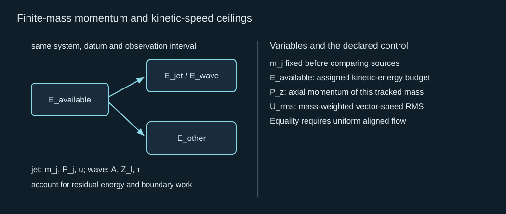
Finite-mass momentum and kinetic-speed ceilings
有限质量的动量与动能速度上限
A second useful control is a plane outgoing weak-acoustic wave. Its pressure and particle velocity determine energy flux, so integrated squared pressure is bounded by assigned wave energy. Apply Cauchy–Schwarz over a specified observation duration to bound the time-mean pressure. This bound is conditional on an outgoing plane-wave relation. It is not a general theorem for standing waves, static support traction or nonlinear impact pressure.
第二个有用对照是外传平面弱声波。其压力和质点速度决定能量通量，因此积分压力平方受所分配波能约束。对指定观察时长应用 Cauchy–Schwarz，可约束时间平均压力。该界限以外传平面波关系为条件，不是驻波、静态支撑牵引或非线性冲击压力的通用定理。
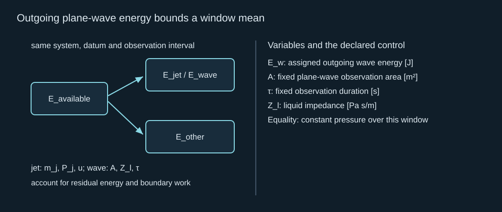
Outgoing plane-wave energy bounds a window mean
外传平面波能量约束时窗平均值
These two inequalities reveal what a useful “highest pressure or velocity” question must hold fixed. Velocity requires a tracked mass and source budget. Pressure requires location, footprint, temporal response, wave/contact mechanism and receiver response. Without those constraints, ideal singularity or shrinking numerical cells can make a formal maximum grow without producing more useful delivered impulse. With them, the maxima become reproducible conditional outputs that can be tested and compared.
这两个不等式说明，有意义的“最高压力或速度”问题必须固定什么。速度需要追踪质量和源预算；压力需要位置、面积、时间响应、波／接触机制及接收体响应。缺少这些约束时，理想奇点或缩小数值单元可使形式最大值增长，却不增加有用传递冲量。有这些约束，最高值才成为可复现、可检验比较的条件输出。
7 · Close the generic chain, then introduce the actual source
7 · 完成通用链，再引入实际源
Stage 阶段 | Specified input 规定输入 | Calculated output passed onward 向后传递的计算输出 |
|---|---|---|
J01: forcing and anisotropy J01：驱动与不对称性 | Finite cavity work, spatial pressure history and boundaries. 有限腔体做功、空间压力历程与边界。 | Velocity change, directional impulse and regime checks. 速度变化、定向冲量与范围检查。 |
J02: formation J02：形成 | Initial liquid/free-surface geometry, flow and gas closure. 初始液体／自由表面几何、流动与气体闭合。 | Resolved jet shape, velocity, mass flux and topology events. 已解析射流形状、速度、质量通量与拓扑事件。 |
J03: flight J03：飞行 | Finite initial jet, perturbations, continuing supply and ambient. 有限初始射流、扰动、持续供给与环境。 | Arrival mass, profile, velocity and breakup state. 到达质量、轮廓、速度及破碎状态。 |
J04: impact and observation J04：冲击与观察 | Arrival state, receiver mechanics and fixed observer. 到达状态、接收体力学与固定观察量。 | Force, impulse, observed pressure and conditional bounds. 受力、冲量、观测压力及条件界限。 |
The mechanics is now closed at the level of governing problems and solved benchmark limits. An actual nonlinear jet still requires solving its declared geometry; no universal closed-form speed law has been claimed. The next material-specific chapters replace the supplied mechanical source with optical absorption, heat transport, finite phase change and a pressure/volume history. Then compare the water-droplet stamp, liquid-under-film/PVC and hydrogel architectures using the same jet and observer definitions. This preserves the project objective while avoiding premature material claims.
力学现已在支配问题及已解对照极限层面闭合。实际非线性射流仍需求解其声明几何，本章没有声称通用闭式速度规律。后续特定材料章节将用光学吸收、传热、有限相变及压力／体积历程替换给定力学源，再按相同射流及观察定义比较水滴印章、薄膜／PVC 下液层及水凝胶结构。这保留项目目标，并避免过早作出材料结论。
Comprehensive calculation · one arriving jet, several different pressure outputs
综合计算 · 一个到达射流、若干不同压力输出
Use the J03 jet: radius 5 μm, length 300 μm and speed 20 m/s. Liquid density is 1,000 kg/m³ and sound speed 1,500 m/s. The fixed-target reference redirects axial flow laterally. For an independent early acoustic receiver control prescribe impedance 0.30×10⁶ Pa s/m; this is a stipulated receiver, not a measured hydrogel. For the filter test alone prescribe a uniform synthetic traction over jet area: 30 MPa for 1 ns, then a constant tail until 15 μs. Choose its tail to remove exactly the initial jet momentum. Use a causal 20 ns box average.
使用 J03 射流：半径 5 μm、长度 300 μm、速度 20 m/s，液体密度 1,000 kg/m³、声速 1,500 m/s。固定靶参照将轴向来流转向侧面。独立早期声学接收体对照规定阻抗 0.30×10⁶ Pa s/m；这是指定接收体，不是水凝胶实测值。仅在滤波检验中规定射流面积上的均匀合成牵引：30 MPa 持续 1 ns，然后恒定尾部持续至 15 μs。选尾值，使其恰好消除初始射流动量。采用因果 20 ns 箱式平均。
1. Calculate incident mass, momentum, kinetic energy, dynamic pressure, steady force and passage time. Verify the finite impulse.
1. 计算入射质量、动量、动能、动压、稳态受力和通过时间，核验有限冲量。
Reference 1 · arrival and momentum ledger / 参考 1 · 到达与动量清单
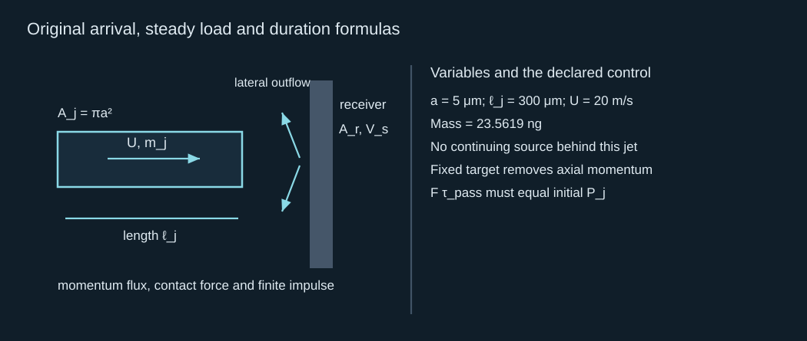
Original arrival, steady load and duration formulas
到达、稳态载荷及持续时间的原始公式
Mass is 2.35619×10⁻¹¹ kg; momentum 4.71239×10⁻¹⁰ N s; kinetic energy 4.71239 nJ. Dynamic pressure is 0.200 MPa, steady force 31.4159 μN and passage time 15 μs. The product of that force and time is the same 4.71239×10⁻¹⁰ N s. The steady traction over jet area is 0.400 MPa, twice dynamic pressure.
质量为 2.35619×10⁻¹¹ kg，动量 4.71239×10⁻¹⁰ N s，动能 4.71239 nJ。动压 0.200 MPa、稳态受力 31.4159 μN、通过时间 15 μs，受力乘时间同为 4.71239×10⁻¹⁰ N s。射流面积上的稳态牵引为 0.400 MPa，是动压两倍。
2. Calculate rigid and specified-receiver acoustic pressures and receiver speed. Check the initial one-dimensional timescales.
2. 计算刚性及指定接收体声学压力、接收体速度，并检查初始一维时间尺度。
Reference 2 · an early acoustic limit / 参考 2 · 早期声学极限
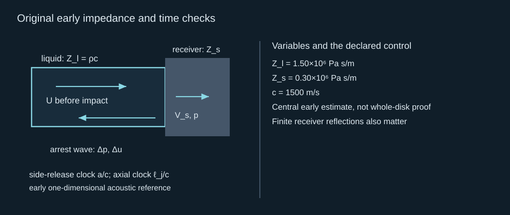
Original early impedance and time checks
早期阻抗与时间核验的原始公式
The rigid pressure is 30 MPa. The stipulated receiver gives 5 MPa and interface speed 16.6667 m/s. Mach number is 0.0133333, side-release scale 3.33333 ns and axial scale 200 ns. The one-dimensional central contact reference has a short early domain. These values do not establish a 30 MPa area-averaged load lasting 15 μs.
刚性压力为 30 MPa，指定接收体得到 5 MPa、界面速度 16.6667 m/s。马赫数 0.0133333、侧向释放尺度 3.33333 ns、轴向尺度 200 ns。因此一维中央接触参照只有短暂早期适用域。这些值不证明 30 MPa 的面积平均载荷持续 15 μs。
3. Show the momentum error if the rigid early pressure is kept across the entire area for the full passage time.
3. 若刚性早期压力在整个面积上维持完整通过时间，证明其动量误差。
Reference 3 · peak-duration consistency / 参考 3 · 峰值与持续时间一致性
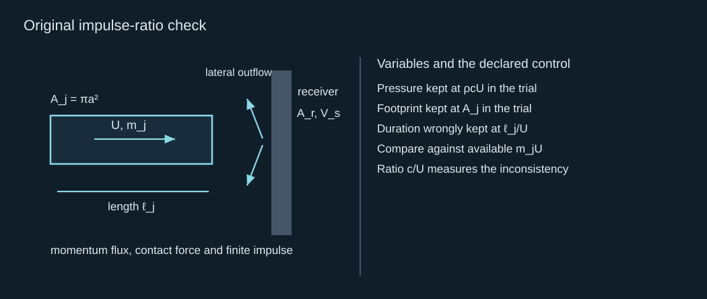
Original impulse-ratio check
冲量比核验的原始公式
The ratio is 75. The trial history asks for seventy-five times the initial axial momentum, contradicting this isolated-jet, zero-outgoing-axial-momentum control. A continuing source, reflected outflow or another loading mechanism requires its own ledger; it cannot be silently added to rescue this trial. The early pressure scale and the passage-time force refer to different stages.
该比为 75，试探历程要求初始轴向动量的七十五倍，违反孤立射流、流出轴向动量为零这一对照。持续源、反射流出或另一加载机制需要自己的清单，不能偷偷加入以挽救该试探。早期压力尺度与通过时段受力属于不同阶段。
4. Solve the synthetic tail and first 20 ns observed pressure. Which parts of this result are verified and which are prescribed?
4. 求解合成尾值及前 20 ns 观测压力。结果哪些部分已核验，哪些是人为规定？
Reference 4 · momentum-conserving observer test / 参考 4 · 守恒动量的观察检验
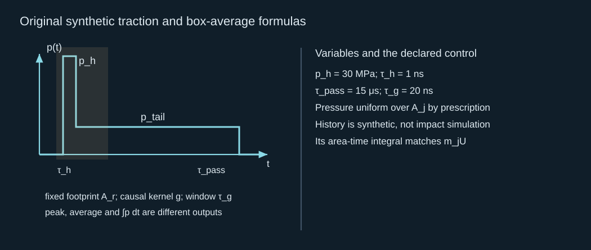
Original synthetic traction and box-average formulas
合成牵引与箱式平均的原始公式
The tail is 398,026.535 Pa = 0.398027 MPa. At the end of the first 20 ns window, observed pressure is 1.87813 MPa, while the prescribed unfiltered peak is 30 MPa. The force integral still removes the initial jet momentum. Arithmetic, convolution and momentum consistency are verified; the waveform and uniform footprint are prescribed and are not proved by this calculation.
尾值为 398,026.535 Pa = 0.398027 MPa。前 20 ns 时窗结束时，观测压力为 1.87813 MPa，而规定的未滤波峰值为 30 MPa。受力积分仍消除初始射流动量。算术、卷积及动量一致性得到核验；波形与均匀作用范围是人为规定，未被该计算证明。
5. Assign at most 6 nJ to this tracked jet kinetic energy. Calculate the whole-mass RMS-speed ceiling. Separately assign 0.20 nJ to an outgoing plane wave over the same area and a 20 ns window; calculate its mean-pressure bound.
5. 对该追踪射流动能最多分配 6 nJ，计算全部质量的均方根速度上限。另对相同面积、20 ns 时窗内的外传平面波分配 0.20 nJ，计算其平均压力界限。
Reference 5 · two conditional energy bounds / 参考 5 · 两个有条件能量界限
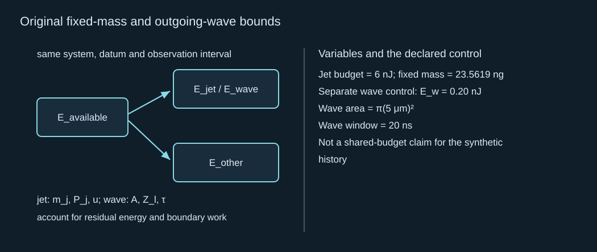
Original fixed-mass and outgoing-wave bounds
固定质量及外传波界限的原始公式
The whole-mass speed ceiling is 22.5676 m/s, so the specified uniform 20 m/s jet fits the 6 nJ budget. The separate outgoing plane-wave mean bound is 13.8198 MPa. It does not bound general receiver traction. These independent budgets are mathematical controls; combining them into one physical event requires a complete source/jet/wave/receiver energy ledger.
全部质量速度上限为 22.5676 m/s，因此指定均匀 20 m/s 射流满足 6 nJ 预算。独立外传平面波平均界限为 13.8198 MPa，但不约束一般接收体牵引。这些独立预算是数学对照；把它们合为一个物理事件，需要完整源／射流／波／接收体能量清单。
6. Connect all four chapters. Which inputs must laser/PFC thermodynamics provide next, and which jet/observer definitions should stay fixed in an architecture comparison?
6. 连接四章。后续激光／PFC 热力学必须提供哪些输入？结构比较中应固定哪些射流／观察定义？
Reference 6 · material source replaces the supplied forcing / 参考 6 · 材料源替换给定驱动
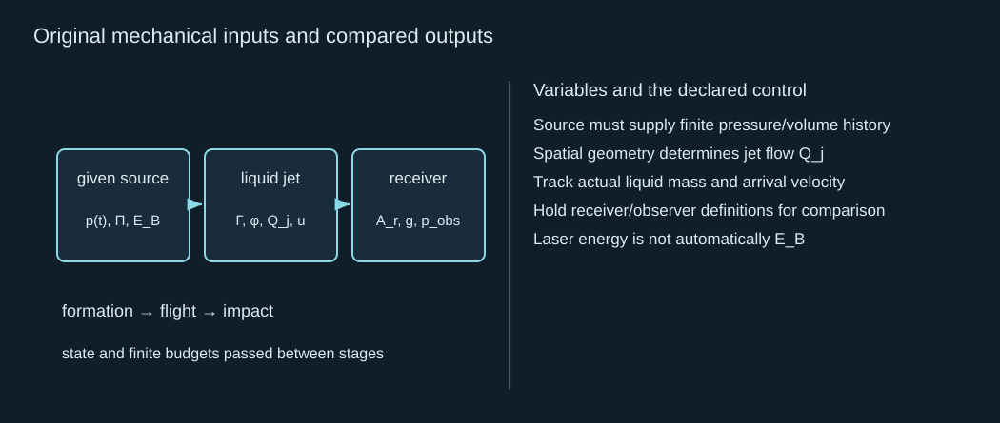
Original mechanical inputs and compared outputs
力学输入及比较输出的原始公式
The source stage must supply optical energy deposition, heat flow, phase-converted mass, internal state and an evolution law for cavity pressure/volume. Formation resolves geometry and topology; flight gives arrival mass/profile; impact gives receiver traction and filtered pressure. Compare all three architectures with declared energy input, jet tracking mass, receiver location/area/kernel and intact-transfer criteria. Preserve different mechanisms as hypotheses; a cavity-driven membrane load need not contain an exterior liquid jet.
源阶段必须给出光学能量沉积、热流、转换相质量、内部状态，以及腔体压力／体积演化规律。形成解析几何及拓扑；飞行给出到达质量／轮廓；冲击给出接收体牵引及滤波压力。比较三种结构时应声明能量输入、射流追踪质量、接收位置／面积／核及完整转印标准。不同机制保留为假说；腔体驱动膜载荷未必包含外部液体射流。
7. For the rigid planar shock control, prescribe stiffened-gas exponent 7, reference density 1,000 kg/m³, sound speed 1,500 m/s and absolute pressure 0.10 MPa. Calculate stiffening pressure, shock speed and pressure rise for 20 m/s arrest. Compare with the linear result.
7. 对刚性平面激波对照，规定刚化气体指数 7、参照密度 1,000 kg/m³、声速 1,500 m/s、绝对压力 0.10 MPa。计算 20 m/s 制动的刚化压力、激波速度及压力增量，并与线性结果比较。
Reference 7 · a nonlinear but soluble impact refinement / 参考 7 · 非线性但可解的冲击改进
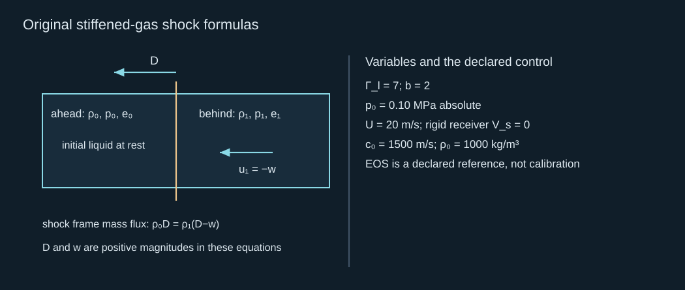
Original stiffened-gas shock formulas
刚化气体激波的原始公式
Stiffening pressure is 321.328571 MPa, shock speed 1,540.53324 m/s, and pressure rise 30.810665 MPa. This is about 2.70% above the 30 MPa linear arrest increment. The small-speed limit of the same formula gives sound speed and the acoustic pressure law. A real liquid’s high-state EOS and finite free-side contact can change the result; the reference shock alone is not a measured maximum.
刚化压力为 321.328571 MPa，激波速度 1,540.53324 m/s，压力增量 30.810665 MPa，约比线性 30 MPa 制动增量高 2.70%。同一公式的小速度极限给出声速及声学压力规律。真实液体高状态方程与有限自由侧面接触可改变结果；参照激波本身不是实测最高值。
Brief mastery response
简短掌握回答
Explain, in one connected paragraph, why a high jet-tip speed, a high early pressure peak and repeatable intact transfer are different achievements. Trace the information needed from forcing through formation and flight to a fixed receiver observation.
用一段连贯文字解释，为什么较高射流尖端速度、较高早期压力峰和可重复完整转印是不同结果。沿驱动、形成、飞行至固定接收体观察追踪所需信息。
Reference-assisted calculations are welcome. Send one short explanation in your own words; preparation of this page does not mark the chapter solved. Earlier accepted records retain their credit.
允许参照答案完成计算。请用自己的话提交一段简短解释；备妥本页不代表本章已完成。此前已接受记录的学分保留。
Next: L01 — replace the supplied source with laser heating and finite phase thermodynamics.